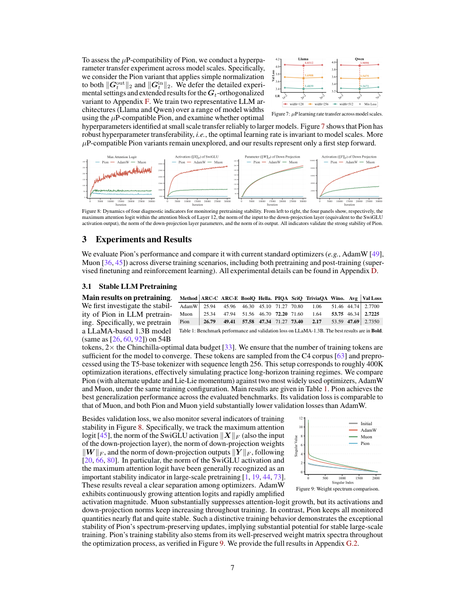

#1
★ 7/10
Pion: A Spectrum-Preserving Optimizer via Orthogonal Equivalence Transformation
Pion：基于正交等价变换的谱保持优化器

图 Figure · Page 7 of paper
🎯 用正交变换保持权重奇异值，实现稳定LLM训练的新优化器
Pion preserves singular values of weight matrices via orthogonal transformations for stable LLM training.
| 维度 | 中文 | English |
|---|---|---|
| ❓ 待解决 的问题 |
训练大语言模型需要兼顾效率、稳定性和泛化能力的优化器。像Adam这样的加法优化器在更新权重时会逐渐扭曲权重矩阵的谱结构，可能导致训练不稳定或权重几何形状不理想。目前缺乏能感知权重矩阵内在几何结构的优化器。 | Training large language models requires optimizers that balance efficiency, stability, and generalization. Standard optimizers like Adam update weights additively, which can distort the spectral structure of weight matrices over time and lead to instability or suboptimal geometry. There is a need for optimizers that are aware of the intrinsic geometry of weight matrices during training. |
| 💡 解决 的亮点 |
• 创新的谱保持更新机制：Pion通过左右正交变换更新权重矩阵，在整个训练过程中保持所有奇异值不变，与加法优化器在本质范式上截然不同。 • 几何调制而不改变谱范数：通过固定谱范数，Pion控制权重矩阵在函数空间中的旋转和变形，避免了奇异值"失控"增长的问题。 • 系统化设计分析：从第一原理推导Pion更新规则，并系统分析设计选择与收敛性质，为方法提供理论支撑。 | • Novel spectrum-preserving update: Pion updates weight matrices via left and right orthogonal transformations, keeping all singular values exactly fixed throughout training — a fundamentally different paradigm from additive optimizers. • Geometry modulation without spectral drift: By fixing the spectral norm, Pion controls how weight matrices rotate and reshape in function space without allowing "runaway" singular value growth. • Systematic design analysis: The paper derives the Pion update rule from first principles and carefully examines design choices and convergence properties, providing theoretical grounding for the approach. |
| 🧪 实验 内容 |
实验涵盖大语言模型的预训练和微调两个场景。预训练阶段在多种规模的语言模型上进行，基线对比包括Adam、AdamW和Muon优化器。微调阶段在指令跟随和下游NLP任务上评估Pion。评估指标包括困惑度（perplexity）、下游任务准确率以及训练损失曲线，同时考察不同模型规模下的性能与训练稳定性。 | Experiments cover both LLM pretraining and finetuning. For pretraining, models are trained on standard language modeling benchmarks at various scales, comparing Pion against Adam, AdamW, and Muon as baselines. For finetuning, Pion is evaluated on instruction-following and downstream NLP tasks. Evaluation metrics include perplexity, downstream task accuracy, and training loss curves. The experimental setup examines both performance and training stability across different model sizes. |
| 📊 实验 结果 |
在LLM预训练基准上，Pion的困惑度与Adam和Muon相当或更优，训练损失曲线在多种模型规模下均保持稳定。微调任务中，Pion在标准NLP基准上与AdamW持平或略优。实验证明谱保持不会损失模型表达能力——Pion达到相近的最终损失值，同时在训练过程中谱范数行为比加法优化器更为稳定。 | Pion achieves competitive or superior perplexity compared to Adam and Muon on LLM pretraining benchmarks, with empirical results showing stable training loss curves across model scales. On finetuning tasks, Pion matches or outperforms AdamW baselines on standard NLP benchmarks. The paper demonstrates that spectrum preservation does not hinder expressiveness — Pion reaches similar final loss values while exhibiting more stable spectral norm behavior throughout training compared to additive optimizers. |
| 🏁 结论 | Pion证明了通过正交等价变换保持权重矩阵奇异值谱是一种可行且有竞争力的LLM训练优化策略。它为Adam类加法优化器提供了一种有理论支撑的几何替代方案，在预训练和微调任务中实现了稳定训练且性能相当或更优。 | Pion demonstrates that preserving the singular value spectrum of weight matrices via orthogonal equivalence transformations is a viable and competitive optimization strategy for LLM training. It offers a principled geometric alternative to Adam-style additive optimizers, achieving stable training with comparable or better performance on pretraining and finetuning tasks. |
| 🔗 论文 链接 |
arXiv: 2605.12492v1 · 📥 PDF | |
⚙️ Method · 方法详解
Pion将每次权重矩阵的更新视为一次正交等价变换：每步通过在左右两侧乘以正交矩阵来更新权重矩阵W，即 W ← U W Vᵀ，其中U和V是由梯度推导出的正交矩阵。这种方式在保持W奇异值谱完全不变的同时，通过改变奇异向量（几何结构）来实现模型学习。正交矩阵通过梯度信号的斜对称部分经Cayley映射或类似收缩方法计算得到。论文系统研究了如何最优地构建正交更新，并分析了收敛性保证。
Pion treats each weight matrix update as an orthogonal equivalence transformation: at each step, the weight matrix W is updated by multiplying it on the left and right by orthogonal matrices, i.e., W ← U W Vᵀ, where U and V are orthogonal matrices derived from the gradient. This preserves the singular value spectrum of W exactly while still allowing the model to learn by changing the singular vectors (the geometry). The orthogonal matrices are computed via a Cayley-map or similar retraction from the skew-symmetric part of the gradient signal. The paper systematically studies how to best construct these orthogonal updates and analyzes convergence guarantees for the resulting optimizer.
📐 Key Formulas · 关键公式
\[W \leftarrow U W V^\top\]
💡 Pion的核心更新规则：权重矩阵W通过左乘正交矩阵U、右乘正交矩阵V的转置进行更新，保持W的所有奇异值不变，仅改变其几何方向。
Pion's core update rule: the weight matrix W is updated by multiplying on the left by orthogonal matrix U and on the right by orthogonal matrix Vᵀ, preserving all singular values of W while rotating its geometric orientation.
\[U = \exp(S_U), \quad V = \exp(S_V), \quad S = -S^\top\]
💡 正交矩阵U和V通过对梯度信号的斜对称矩阵S（满足S = -Sᵀ）取矩阵指数得到，确保变换的正交性。
The orthogonal matrices U and V are computed as matrix exponentials of skew-symmetric matrices S (where S = -Sᵀ) derived from the gradient, guaranteeing the transformations remain orthogonal.
🌟 Why It Matters · 为什么重要
随着大语言模型规模不断增大，训练稳定性和权重矩阵几何结构变得越来越重要，Pion提供了一种将优化视为几何变换而非加法扰动的全新视角。这项工作为尊重神经网络权重内在结构的优化器开辟了新的设计空间，有望影响未来超越LLM领域的优化器发展。
As LLMs grow larger, training stability and the geometry of learned weight matrices become increasingly critical concerns — Pion offers a novel lens through which to think about optimization as geometric transformation rather than additive perturbation. This work opens a new design space for optimizers that respect the intrinsic structure of neural network weights, potentially influencing future optimizer development beyond LLMs.